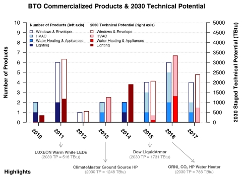
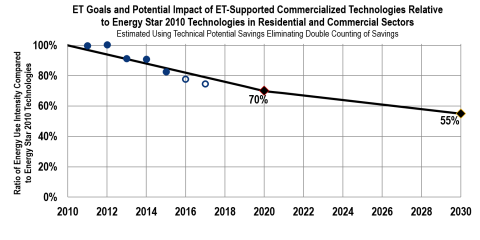
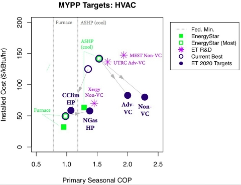
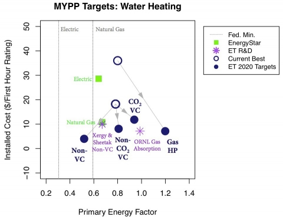
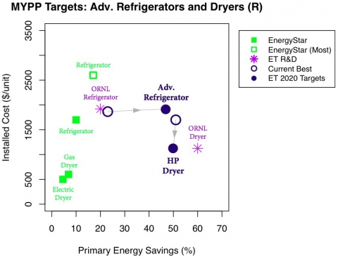
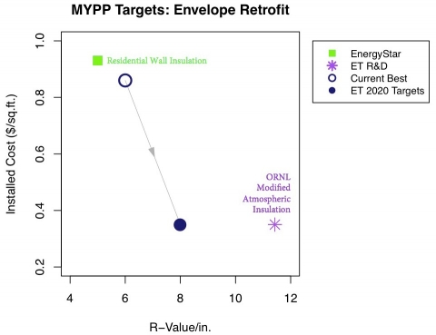
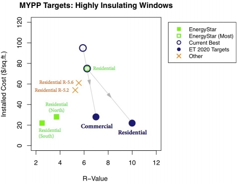

Learn about DOE's Building Technologies Office's Emerging Technologies R&D program's accomplishments and progress toward its goals in 2015.
HVAC, Water Heating, and Appliances
- Honeywell commercialized Solstice N40, a low-global warming potential (GWP) refrigerant that provides a 67% reduction in GWP and up to 10% increased energy efficiency for supermarket refrigeration.
- Xergy developed the first electrochemical compressor for home water heaters, and shipped it to their industry partner for development of a complete prototype. Xergy’s technology is one of the first in a new class of super efficient, low-GWP technologies called called "non-vapor compression"—which are transforming how heating and cooling technologies have operated for the past 100 years.
- ORNL, partnering with CRADA partner Emerson Climate Technologies, achieved its technical performance targets in a field prototype of a high performance cold- climate multistage air-source heat pump. The new heat pump could result in annual primary energy savings of 0.1 quads when fully deployed.
- ORNL's prototype ultrasonic clothes dryer was recently demonstrated to dry small pieces of fabric in under 15 seconds. With commercialization, the technology could result in 0.4 quads of energy savings and drying times for a typical load could be reduced to 15 to 20 minutes.
- ORNL’s performance evaluation of alternative lower global warming potential refrigerants showed that they could be used to successfully replace hydrochlorofluorocarbon (HCFC) and hydrofluorocarbon (HFC) refrigerants in hot climates. The results are of particular interest to many developing countries that have hot climates, and support the proposed amendment to the Montreal Protocol to phase down the use of HFC refrigerants.
Lighting
- BTO's partnership with Lumileds resulted in improved light output and reduced manufacturing costs, resulting in a record light output per dollar of 176 lumens/$ for commercially available high brightness LEDs.
- Eaton's pilot scale development of an innovative manufacturing process that places the LED package, chip, or chip array directly on a fixture or heat sink to improve thermal management approaches has resulted in reducing the number of process steps by 33% and has cut total process time by almost 50%. This process is ultimately projected to reduce manufacturing cost from $50/klm to less than $4/klm.
Windows & Building Envelope
- ITN Energy Systems has developed a novel low-e film that could affect a retrofit market of 100 million homes, helping save some of the 2 quads of energy that is lost through windows annually.
Sensors & Controls
- ORNL developed a first version manufacturing prototype with Molex of their laboratory prototype low-cost wireless sensor platform through additive manufacturing.
- ORNL developed a VOLTTRON-based low-cost solution that can be used to control and optimize multiple roof top units in small and medium-sized commercial buildings, reducing the number of units running at once. A test system for four 10-ton RTUs at a church is expected to result in $1,200 in energy savings within 6-12 months.
Building Energy Modeling
- Sefaira released Sefaira Systems, an HVAC analysis tool based on EnergyPlus that compares multiple HVAC system types along with early-stage building design parameters. It subsequently released Sefaira Architecture which uses EnergyPlus to perform loads analysis on Revit and SketchUp models.
- Autodesk released Insight360 for Revit and FormIt. Insight360 uses Autodesk’s previously launched EnergyPlus Cloud service to perform thermal loads analysis at any point during the design process.
- Trane launched a beta of the next generation version of their popular TRACE load analysis and HVAC selection and sizing software. The new version replaces TRANE’s proprietary engine with EnergyPlus.
- RESNET adopted a plan that will move the widely used HERS Index to a central single-source implementation based on EnergyPlus.
- PPG industries launched eView Construct, an IGU (Insulated Glazing Unit) design and characterization application based on LBNL’s WINDOW 7.3 software and its IGDB database.
Crosscutting
- Oak Ridge National Laboratory worked with over a dozen industry partners to develop a 3D-printed building with a first-of-its-kind integrated energy system that allows the building to share energy with a vehicle. Named AMIE, or the Additive Manufacturing Integrated Energy, it was named one of the top 8 coolest construction technology innovations in 2015.
- Oak Ridge National Laboratory hosted the first-ever Industry Day, where over 300 industry and government stakeholders from across the energy efficiency and renewable energy community gathered to spotlight new technologies and create partnerships.
- Two companies supported by FOA awards were selected to join the Wells Fargo Innovation Incubator: Heliotrope Technologies and Thermolift Inc.
- In November 2014 Pres. Obama & China Pres. Xi Jinping made a joint announcement to expand the U.S.-China Clean Energy Research Center (CERC), including the Building Energy Efficiency Consortium, as part of their announcement of their climate targets.
BTO-Supported Commercialized Technologies and Energy Impacts
The following graph indicates the number of BTO-supported technologies commercialized from FY 2010 to FY 2015 and potential energy savings resulting from those technologies, as well as projected data for FY 2016 and FY 2017. Data are based on internal BTO tracking and Prioritization Tool analysis.

Since 2010, BTO's partners have commercialized 17 BTO-supported technologies.
FY15 Commercialized Technologies
The following BTO-supported technologies were commercialized in FY2015:
- Honeywell: Refrigerant R448A (trade name Solstice N40)
- DOW: LiquidArmor (spray-applied liquid flashing)
- Mainstream Engineering: QwikSEER+ WattSaver® (electronic control for air conditioners and heat pumps)
- Mainstream Engineering: QwikSwapTM replacement blower motor
Overall ET Program Goal
The BTO Multi Year Program Plan has established the following goal for the ET Program: “As a result of ET-sponsored research, cost- effective technologies will be introduced into the marketplace by 2020 that will be capable of reducing a building’s energy use by 30% relative to 2010 cost effective technologies, and 45% by 2030.”
The below graph tracks ET Program’s progress toward this goal. View the methodology and data sources used for these graphs.

MYPP R&D Targets
The following charts provide Emerging Technologies Program Multi- Year Program Plan (MYPP) cost and performance targets for certain building technology categories, expected performance of selected BTO-supported R&D projects, as well as information on EnergyStar and current best available products in each technology category. When applicable, current federal minimum efficiency standards are also indicated. View the data sources used for these graphs.

*HP = heat pump; VC = vapor compression
- UTRC Adv-VC = High-efficiency Low Global Warming Potential (GWP) Compressor project
- MEST Non-VC = Compact Thermoelastic Cooling System project
- Xergy Non-VC = Low-cost Electrochemical Compressor Utilizing Green Refrigerants for HVAC Applications project

*HP = heat pump; VC = vapor compression
- Xergy Non-VC = Advanced Hybrid Water Heater Using Electrochemical Compressor project
- Sheetak Non-VC = Heat Pump Water Heater Using Solid-State Energy Converters project
- ORNL Gas Absorption = Residential Absorption Heat Pump Water Heater project

* HP = heat pump
- ORNL Refrigerator = Magnetocaloric Refrigeration project
- ORNL Dryer = Heat Pump Clothes Dryer project

- ORNL Modified Atmospheric Insulation = R25 Polyisocyanurate Composite Insulation Material project

| Subprogram | Journal Publications | IP | Licenses | |||
| 2014 | 2015 | 2014 | 2015 | 2014 | 2015 | |
| HVAC | 3 | 12 | 12 | 15 | 0 | 4 |
| Lighting | 1 | 1 | 10 | 1 | 0 | 0 |
| Windows/Envelope | 7 | 7 | 11 | 6 | 4 | 0 |
| Sensors and Controls | 0 | 8 | 3 | 0 | 0 | 1 |
| Modeling | 13 | 14 | 0 | 0 | 0 | 1 |
| Total: | 24 | 42 | 36 | 22 | 4 | 6 |
Patents Awarded in 2015 |
|
New patent issued: US #8,988,881 titled "Heat Exchanger Device and Method for Heat Removal or Transfer" issued on 3/24/2015. Patent awarded for IB3155US “Insulated window frame system.” This patent is for an innovative thermal break and integration into the aluminum alloy window framing. |
Journal Articles Published in 2015 |
|
HVAC, Water Heating and Appliances |
|
D.A. Yashar, S. Lee, P. A. Domanski, “Rooftop air-conditioning unit performance improvement using refrigerant circuitry optimization,” Applied Thermal Engineering, vol. 83, pp. 81-87, May 2015. M. Beshr, V. Aute, V. Sharma, O. Abdelaziz, B. A. Fricke, R. Radermacher, “A comparative study on the environmental impact of supermarket refrigeration systems using low GWP refrigerants,” International Journal of Refrigeration, vol. 56, pp. 154–164, Apr. 2015. V. Khare, Y. Khan, J. Mathur, M. Bhandari, “Performance Evaluation of Radiant Cooling System Integrated with Air System under Different Operational Strategies,” Energy and Buildings, vol. 97, pp. 118–128, Apr. 2015. P. Bansal, L. Cremaschi, “Advances in refrigeration and heat transfer engineering,” Science and Technology for the Built Environment, vol. 21, pp. 481–482, Jul. 2015. P. Bansal, B. Shen, “Analysis of Environmentally Friendly Refrigerant Options for Window Air Conditioners,” Science and Technology for the Built Environment, vol. 21, pp. 483–490, Jul. 2015. X. Liu, S. Lu, P. Hughes, Z. Cai, “A Comparative Study of the Status of GSHP Applications in the United States and China,” Renewable & Sustainable Energy Reviews, vol. 48, pp. 558–570, Aug. 2015. M. R. Ally, J. D. Munk, V. D. Baxter, A. C. Gehl, “Exergy analysis of two-stage ground source heat pump with a vertical bore for residential space conditioning under simulated occupancy,” Applied Energy, vol. 155, pp. 502-514, Oct. 2015. A. M. Raza, J. D. Munk, V. D. Baxter, A. C. Gehl, “Data, exergy, and energy analysis of a vertical-bore, ground-source heat pump to for domestic water heating under simulated occupancy conditions” Applied Thermal Engineering, vol. 89, pp. 192-203, Oct. 2015. P. Bansal, “High efficiency novel window air conditioner,” Applied Energy, vol. 156, pp. 311-320, Sep. 2015. S. Wang, X. Liu, S. Gates, “Comparative study of control strategies for hybrid GSHP system in the cooling dominated climate,” Energy and Buildings, vol. 89, pp. 222-230, Feb. 2015. S. Lu, Y. Qi, Z. Cai, Y. Li, "Optimization model analysis of centralized groundwater source heat pump system in heating season" Frontiers in Energy, vol. 9, pp. 343-361, Sep. 2015. X. Liu, S. Lu, P. Hughes, Z. Cai, “A comparative study of the status of GSHP applications in the United States and China”, Renewable and Sustainable Energy Reviews, vol. 48, pp. 558-570, Aug. 2015. |
|
Lighting |
|
T.W. Koh, J.A. Spechler, K.M. Lee, C.B. Arnold, B.P. Rand, "Enhanced outcoupling in organic light emitting diodes via a high-index contrast scattering layer," ACS Photonics, vol. 2, pp. 1366-1372, Aug. 2015. |
|
Windows/Envelope |
|
C. P. Li, C. Engtrakul, R. C. Tenent, C. A. Wolden, “Scalable synthesis of improved nanocrystalline, mesoporous tungsten oxide films with exceptional electrochromic performance,” Solar Energy Materials & Solar Cells, vol. 132, pp. 6–14, Jan. 2015. M. Sleiman, S. Chen, H. E. Gilbert, T. Kirchstetter, P. Berdahl, L. Bruckman, “Soiling of building envelope surfaces and its effect on solar reflectance – Part III: Interlaboratory study of an accelerated aging method for roofing materials,” Solar Energy Materials and Solar Cells, vol. 143, pp. 581-590, Nov. 2015. L. L. Fernandes, E. S. Lee, A. McNeil, J. C. Jonsson, T. Nouidui, X. Pang, “Angular selective window systems: Assessment of technical potential for energy savings,” Energy and Buildings, vol. 90, pp. 188-206, Mar. 2015. S. Firląg, M. Yazdanian, C. Curcija, C. Kohler, S. Vidanovic, R. Hart, S. Czarnecki, “Control algorithms for dynamic windows for residential buildings,” Energy and Buildings, vol. 109, pp. 157-173, Dec. 2015. E. S. Lee, X. Pang, A. McNeil, S. Hoffmann, A. Thanachareonkit, Z. Li, Y. Ding, “Assessment of the Potential to Achieve very Low Energy Use in Public Buildings in China with Advanced Window and Shading Systems,” Buildings, vol. 5, pp. 668-699, May 2015. M. Cao, P. Rosado, Z. Lin, R. Levinson, D. Millstein, “Cool Roofs in Guangzhou, China: Outdoor Air Temperature Reductions during Heat Waves and Typical Summer Conditions,” Environmental Science & Technology, vol. 49, pp. 14672-14679, Dec. 2015. K. E. Konis, S. Lee, “Measured daylighting potential of a static optical louver system under real sun and sky conditions,” Building and Environment, vol. 92, pp. 347-359, Oct. 2015. |
|
Sensors and Controls |
|
M. M. Olama, X. Ma, Xiao, S. M. Killough, T. Kuruganti, S. F. Smith, Stephen Fulton, S. M. Djouadi, “Analysis, Optimization, and Implementation of a Hybrid DS/FFH Spread-Spectrum Technique for Smart Grid Communications,” EURASIP Journal on Advances in Signal Processing, pp. 1–18, Mar. 2015. J. H. Noh, P.C. Joshi, T. Kuruganti, P. D. Rack, “Pulse thermal processing for low thermal budget integration of IGZO thin film transistors,” IEEE Journal of Electron Devices Society, vol. 3, pp. 297–301, Apr. 2015. J. Nutaro, D. Fugate, T. Kuruganti, J. Sanyal, M. Starke, "Cost Effective Retrofit Technology for Reducing Peak Power Demand in Small and Medium Commercial Buildings,” Science and Technology for the Built Environment, vol. 21, pp. 761-772, May 2015. P. Joshi, T. Kuruganti, S. Killough, “Impact of pulse thermal processing on the properties of inkjet printed metal and flexible sensors,” ECS Journal of Solid State Science and Technology, vol. 4, issue 4, pp. 3091-3096, 2015. B. A. Akyol, J. N. Haack, G. Hernandez, S. Katipamula, S. E. Widergren, "Transaction-Based Controls for Building-Grid Integration: VOLTTRON™," Electroindustry, vol. 20, pp. 11-13, Jul. 2015. G. Lin, J. Granderson, M. R. Brambley, "Scaling Retro-Commissioning to Small Commercial Buildings: A Turnkey Automated Hardware- Software Solution," ASHRAE Transactions, vol. 121, pp. 1-8, Jul. 2015. J-M. Dussault, C. Kohler, H. Goudey, R. Hart, L. Gosselin, S. E. Selkowitz, “Development and assessment of a low cost sensor for solar heat flux measurements in buildings,” Solar Energy, vol. 122, pp. 795- 803, Dec. 2015. E. S. Lee, C. Gehbauer, B. E. Coffey, A. McNeil, M. Stadler, C. Marnay, “Integrated control of dynamic facades and distributed energy resources for energy cost minimization in commercial buildings,” Solar Energy, vol. 122, pp. 1384-1397, Dec. 2015. |
|
Modeling |
|
M. Wetter, M. Bonvini, T. S. Nouidui, “Equation-based languages - A new paradigm for building energy modeling, simulation and optimization,” Energy and Buildings, available online, Oct. 2015. W. Zuo, M. Wetter, W. Tian, Dan Li, M. Jin, Q. Chen, “Coupling indoor airflow, HVAC, control and building envelope heat transfer in the Modelica Buildings library,” Journal of Building Performance Simulation, available online, Jul. 2015. D. Yan, L. O’Brien, T. Hong, X. Feng, B. Gunay, F. Tahmasebi, A. Mahdavi, “Occupant behavior modeling for building performance simulation: current state and future challenges,” Energy and Buildings, vol. 107, pp. 264-278, Aug. 2015. T. Hong, S. D'Oca, L. Taylor-Lange, W. Turner, Y. Chen, S. Corgnati, “An ontology to represent energy-related occupant behavior in buildings. Part II: Implementation of the DNAS framework using an XML schema,” Building and Environment, vol. 94, pp. 196-205, Aug. 2015. S.H. Lee, T. Hong, M.A. Piette, G. Sawaya, Y. Chen, S.C. Taylor-Lange, “Accelerating the energy retrofit of commercial buildings using a database of energy efficiency performance,” Energy, vol. 90, part 1, pp. 738- 747, Oct. 2015. S.H. Lee, T. Hong, M.A. Piette, S.C. Taylor-Lange, “Energy Retrofit Analysis Toolkits for Commercial Buildings: A Review,” Energy, vol. 89, pp. 1087-1100, Sep. 2015. T. Hong, S. D’Oca, W. Turner, S.C. Taylor-Lange, “An ontology to represent energy-related occupant behavior in buildings. Part I: Introduction to the DNAs Framework,” Building and Environment, vol. 92, pp. 764-777, Oct. 2015. X. Ren, D. Yan, T. Hong, “Data Mining of Space Heating System Performance in Affordable Housing,” Building and Environment, vol. 89, pp. 1-13, Jul. 2015. X. Feng, D. Yan, T. Hong, “Simulation of occupancy in buildings,” Energy and Buildings, vol. 87, pp. 348-359, online, Jan. 2015. S. D’Oca, T. Hong, “Occupancy schedules learning process through a data mining framework,” Energy and Buildings, vol. 88, pp. 395-408, Feb. 2015. X. Zhou, D. Yan, T. Hong, X. Ren, “Data analysis and stochastic modeling of lighting energy use in large office buildings in China,” Energy and Buildings, vol. 86, pp. 275-287, Jan. 2015. A. Garrett, J. R. New, “Scalable Tuning of Building Models to Hourly Data,” Energy Journal, vol. 84, pp. 493–502, Apr. 2015. A. Roth, D. Goldwasser, A. Parker, “There's a measure for that!,” Energy and Buildings, available online, Sep. 2015. Y. Heo, G. Augenbroe, D. Graziano, R. Muehleisen, L. Guzowski. “Scalable Methodology for Large Scale Building Energy Improvement: Relevance of Calibration in Model-Based Retrofit Analysis.” Building and Environment, May, 2015. |